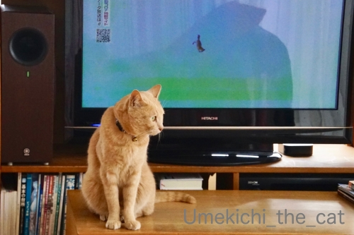
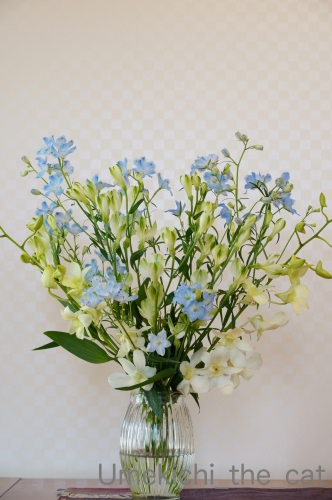
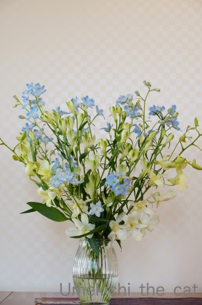

15分間集中できますか？ [梅吉]

梅吉！うしろ！！うしろー！！！

![[猫]](https://blog.ss-blog.jp/_images_e/101.gif) あれはー！
あれはー！

キタキツネさんにケンカを売りますw

なんや かっぷるやん じとーっ![[目]](https://blog.ss-blog.jp/_images_e/84.gif)
羨ましいですか？普段おかーさんといちゃいちゃしてるんだから良いじゃない(*>艸<)
（22秒 音は出ません＾＾）
つららにも興味津々で画面の外まで探してました。
梅吉の後ろ姿に「おまたチョップしたい！」と思った方は同志です〜♪
梅吉は自分の動画が一番好きだし
他の動物にもあまり興味がないのですが
この15分番組はずーーーーーっと見てました。
北の大地には何かシンパシーを感じるのかしら(≧▽≦)
にゃんこの集中力持続時間ってどのくらいなんでしょう。15分って長い？短い？？
＊＊＊＊＊＊＊＊＊＊＊＊＊＊＊＊＊＊＊＊＊＊＊＊＊＊＊＊＊＊＊＊＊＊＊＊＊＊＊＊＊＊＊＊
最近ショックだったことー！

4月8日より住吉大社が全面的に閉門となっています。
期限は告知されていません。
私の憩いのお散歩場所がぁぁぁぁぁ(꒦ິ⌑꒦ີ)
四天王寺は10日より閉門です。
こちらも無期限とのこと。
一瞬「神も仏もないものか・・・」と思いましたが
世の中それだけ封じ込めに本気だということ、かな。
神様だってお慎みなんですから人間が私権を盾にわがまま言っている時ではありません。
どうかこの一ヶ月のがまんで1秒でも早くこの事態が収束しますように。

梅吉が生花にいたずらしなくなってきたので家に花を飾れる様になりました＾＾
花屋さん応援でもあります。
アリストロメリア、デルフィニューム、デンファレ（白）で爽やかに。
 ↑ガブッと一押し↑
↑ガブッと一押し↑
梅吉！うしろ！！うしろー！！！
キタキツネさんにケンカを売りますw
羨ましいですか？普段おかーさんといちゃいちゃしてるんだから良いじゃない(*>艸<)
（22秒 音は出ません＾＾）
つららにも興味津々で画面の外まで探してました。
梅吉の後ろ姿に「おまたチョップしたい！」と思った方は同志です〜♪
梅吉は自分の動画が一番好きだし
他の動物にもあまり興味がないのですが
この15分番組はずーーーーーっと見てました。
北の大地には何かシンパシーを感じるのかしら(≧▽≦)
にゃんこの集中力持続時間ってどのくらいなんでしょう。15分って長い？短い？？
＊＊＊＊＊＊＊＊＊＊＊＊＊＊＊＊＊＊＊＊＊＊＊＊＊＊＊＊＊＊＊＊＊＊＊＊＊＊＊＊＊＊＊＊
最近ショックだったことー！
4月8日より住吉大社が全面的に閉門となっています。
期限は告知されていません。
私の憩いのお散歩場所がぁぁぁぁぁ(꒦ິ⌑꒦ີ)
四天王寺は10日より閉門です。
こちらも無期限とのこと。
一瞬「神も仏もないものか・・・」と思いましたが
世の中それだけ封じ込めに本気だということ、かな。
神様だってお慎みなんですから人間が私権を盾にわがまま言っている時ではありません。
どうかこの一ヶ月のがまんで1秒でも早くこの事態が収束しますように。

梅吉が生花にいたずらしなくなってきたので家に花を飾れる様になりました＾＾
花屋さん応援でもあります。
アリストロメリア、デルフィニューム、デンファレ（白）で爽やかに。
2020-04-09 00:00
nice!(92)
コメント(27)

カフェオレ色の梅吉

梅吉 2023年8月10日 永眠


梅吉と出会った譲渡会

犬猫の理由なき殺処分ゼロ
妄想広告
UMEKICHI 光

爆発的に早い！
時々攻撃的！
Thanks to Mr.Boss365
爆発的に早い！
時々攻撃的！
Thanks to Mr.Boss365

梅吉君、つらら気になるんだ～
実は僕、つららをバキッとへし折ってそれを食べてみたいという
密かな野望があるのですが
梅吉君と気が合うかな～（笑）
by 藤並 香衣 (2020-04-09 01:18)
相手がTVなら15分は上々かな。すぐ飽きちゃう猫が多いですよね。
ウチのドンは小動物なら1時間番組でも観てます。TV好きなの。
by zombiekong (2020-04-09 02:39)
魚の映像とか鳥さんだとず～～っと見てるかも？
次男君はゴルフ中継の動くボールに夢中になりました＾＾
by ぽちの輔 (2020-04-09 06:15)
キタキツネさんに猫パンチ？（ﾟ□ﾟ）
つららは紐だと思ったのかもね？
住吉大社も自粛してるんだね。
by 英ちゃん (2020-04-09 08:04)
すんごい距離でガン見ですね（笑
ホリホリしてますねぇ～
Ｌｅａは時々、じぃ～と見ることがありますが
長く見ることはありません！
そしてなぜか目覚ましテレビくんは許せないようで
ワンワン吠えます(;^_^A
by きぃ (2020-04-09 08:09)
梅吉さんの集中力、凄いですね～！
でも、テレビ画面に傷が付かないか心配です・・・(^_^;)
by kou (2020-04-09 08:48)
梅吉さんテレビに集中しちゃったのですね！
神社も自粛しちゃっているのですね。
by ma2ma2 (2020-04-09 09:39)
キタキツネさんに興味を示すなんて知能が高いですよ！
うちは二人ともテレビにはまるで興味なしでした。
たまにパソコンの中のマウスのポインタが気になる様子はあったかな？
モニタの裏面を不思議そうに見ていたことはあります。
猫にとっての15分間の集中力ってきっと人間にしたら2時間くらいになるのでは？ つららをつららと認識しているのでしょうかね？梅吉さん天才ですｗ
Naoちゃんのところに飾ったお花も蕾が次々に開いてきてにぎやかです。
by marimo (2020-04-09 09:47)
こんにちは。
梅吉君、狐さんに猫パンチ、最高の反応ですね。
氷柱に反応は、可愛くて笑えます（爆）滑っている感じがナイスです。
梅吉君の素晴らしい行動力が羨ましいですね。小生猫最近は無反応。
多少？爪でモニター画面が破損しないか？気になります。
「北の大地」はちぃさん譲りの道産子魂？を持っている可能性あり？
住吉大社の閉門は寂しいですね。神頼み出来ない状況には違和感あり！！
また、混まなければリラックス・気分転換可能に適した場所です。
業務なしで空間を解放しても良いと感じます。
花を飾る空間、ご主人のテレワークも捗ると思います！？(=^･ｪ･^=)
by Boss365 (2020-04-09 09:58)
ほほう。北の大地には絶対何か秘密が隠されてる～？！
15分は確かに長いわ。私の集中は3分程度が限界と思われます(^_^;)
今日はいなばのカレー缶詰の記事アップしますよ～。
by よーちゃん (2020-04-09 10:00)
梅吉さん、キタキツネさんと色合いが似てるから同類って思ったのかしら～。
それともおかあさんの生まれ故郷のにおいを感じ取った？
実家のミイちゃんは、小さい頃、フィギュアスケートに興味持って、テレビの裏側に回りこんじゃったりしたそうです(どこにいるんだー？って思ったみたい)。
テレビにパンチしてるけど、画面は大丈夫だったのかしら。
> 普段おかーさんといちゃいちゃしてるんだから良いじゃない
うらやましいぞーーーーー！ あ、いや、キタキツネにでもなければ、梅吉さんにでもなくて、ちぃさんに、です。いちゃいちゃする猫さん、早く来てーーー！
by ChatBleu (2020-04-09 10:14)
梅吉さん、キタキツネとつららに興味が=(^.^)=
キタキツネのカップルよりも梅吉さんとおかーさんの方が
イチャイチャしてると思いますよぉ♪( ´▽｀)
梅吉さんの後ろ姿、撫でくりまわしたいです（≧∇≦）
１５分もじっと見てるなんてすごい集中力ですねぇ(°_°)
うちのは鳴き声が聞こえると一瞬「うん？」って反応しますが
すぐに「気のせいか」って寝ますw BYニッキーのかみさん
by ニッキー (2020-04-09 10:22)
キタキツネは分かるけど
つららにまで反応するなんて！
おとーさんと、おかーさんのふるさとを感じるのかしら(笑)
おまたちょっぷ、したくなる！
あおにはしてますｗｗ
この番組、わたしもテレビついていた記憶があるｗｗ
住吉さん、残念すぎます・・・
憩いの場所がなくなるのはつらいのだーーー！
うちの前の公園はさすがに封鎖できないと思うんだけど・・・
by リュカ (2020-04-09 10:42)
ねこあるある、ですね。
でも、かわいい。
by とし＠黒猫 (2020-04-09 11:29)
梅吉さん、15分集中力継続はスゴイ！
ツララから何かヒトには見えないビームが出ているのでしょうか？！^^;
立ち上がってホリホリの後ろ姿がたまりません♪
ウチのが15分頑張れるのはゴミ箱漁りぐらいかな・・・(≧▽≦)
ほんと飽きっぽくて、お気に入りのオモチャでもスグ投げ出しちゃいます。
神社仏閣も行くところが無くなった人たちが「屋外だから」と押しかけて初詣状態になったら大変ですもんね。
神仏に祈るのも自宅で。Stay Homeです^^
デルフィニューム、淡いブルーがキレイ！
梅吉さんってば大人になるの早すぎ～ウチのはまだ棚の上のものはとりあえず落としますよ～^^;
by ゆきち (2020-04-09 15:21)
思わず笑っちゃいました・・
同じ番組見てたんです、我が家ではジュエル（犬）が
見ていて”ワン、・・”と吠えていました！
by Take-Zee (2020-04-09 16:00)
梅吉さん！！テレビ見るんですね～
うちの子は、何が映っていようが一瞬も興味を持ちません(>_<)
テレビの上にはよく乗ってますけど(;´∀｀)
by 50oyaji (2020-04-09 20:45)
15分、私より長いかも~σ(^◇^;)
画面をカリカリする後ろ姿も萌えますにゃー。
by liang (2020-04-09 22:41)
キタキツネに反応する梅吉さん、可愛い～！
つらら？！ あ、うちのも差し棒とか指とか反応したから、そんな感じかしら。子猫の頃は猫に反応したけど、画面の中の猫は反応返してこないとわかってからは、ワオキツネザルとか珍しい動物にびっくりしたようで注目してました。
画面に15分は長い方ですよね。庭の小鳥ならもっと長いけど。
うちのは膝の上で一緒にフィギュアスケートそれぐらい見てました^^
by sana (2020-04-10 00:39)
8時だョ!全員集合の「志村うしろ～」を思い出します(笑)
そして梅吉さんきつねカップルをガン見・・・
おまえらいったいコソコソ何してるんだ状態ですね。
おまたチョップ(爆)
いったいどんな技なのか興味あるのでまた動画お願いします(^^♪
生花とっても素敵です～
by yamatonosuke (2020-04-10 01:44)
あんなに間近でTVに釘付け・・・愛らしい後ろ姿の梅吉さん＾＾。
15分の集中力、すごいです。
子供の頃ウズラを飼ってて、それ目当てにお隣の猫が遊びに来てましたが、
身を低くして、じーっとウズラの動きを見てる間、尻尾を触っても気付いてないのか怒らず。
それでも10分くらいだったかな、集中力は。その後、猫パンチされました・・・。
by Inatimy (2020-04-10 06:18)
野球中継でボールを追うとか世界ネコ歩きが大好きとか
いろいろ聞いたことがありますが、うちの猫は歴代誰も
テレビに関心がありません。犬も初代柴犬の裕次郎だけは
テレビの中で犬が吠えるシーンがあると反応していまし
たが、その後の2匹は無反応。つまんなーい。
by mio (2020-04-10 14:37)
梅吉さん頑張ってるな～。
カップル見てるのかわいいなぁ。（カップルも込みで）
散歩コースが閉鎖は悲しいですね。
私の職場周辺は一見微妙な本気度です。
何か困ったら都庁に直接聞きに行ってやる～！なんて…
（歩いて行ける距離なんです）
by ふにゃいの (2020-04-10 18:05)
つららカリカリの仕草が可愛いですね♪ ^^)
15分間の集中力、私には出来ません。。。
by yes_hama (2020-04-10 21:33)
15分集中できる猫!!! それはスゴいことじゃないのかしら?!
それにしても、カップルにほりほり攻撃は･･･うらやましいんか〜い(^◇^;)
住吉さんも閉めちゃってるんですね･･･ まぁ、ガマンの時。。
by のらん (2020-04-11 12:21)
つらら、おいしそうに見えたかな？( *´艸｀*)
かわいすぎますねー ヾ(≧∇≦*)〃ヾ(*≧∇≦)〃
うちもカリカリはよくするのですが、TVに向かっては
ないですね。お風呂場のタイルとか、ドレッサーの扉とか。
意味不明ですがっ(爆w)
住吉さん、閉まっているのですね...
今はしっかり我慢して1日も早く終息に向かうように
しなれけばNYみたいになっちゃいますよね｡ﾟ(ﾟ´ω`ﾟ)ﾟ｡ﾋﾟｰ
by カトリーヌ (2020-04-11 23:37)
15分集中力ありますね^^
by ニコニコファイト (2020-04-12 13:36)